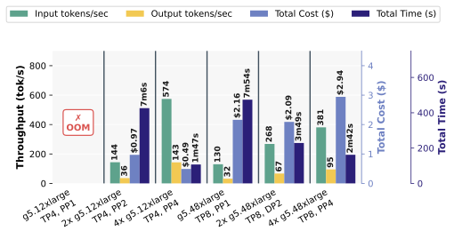

不部署就回答"这套模型+硬件+配置能跑多快、要多少显存、扛得住多少 QPS"——从 Vidur 到 KernelSight-LM 的仿真器版图，到逐算子 FLOPs/权重/激活/KV 的记账方法，再到 Roofline 与请求级离散事件仿真的完整推导；全程以 DeepSeek-V4.1-Flash（AR-LLM）与 MiniMax-H3（全模态 DiT）为双案例，并给出一个可改 config 的开源原型。
仿真内核包成 engine/router 之上的规划器：104-GPU 三地集群 goodput ×1.18、$/token −20%；反例同样刺眼——校准前 roofline 误差可达 4.7×、LLM 直接预测高估 4–9×。
→ 跳到详情每 token 能耗 = 常数 + 权重项 + KV 项 + 时延项：374 次留出验证误差 ≤3.73%，大批比小批每 token 能耗低 33.2–46.8%——账本从时延扩展到能耗。
→ 跳到详情首个 HBM+HBF 闪存层闭环仿真器：HBF 供数比 host DRAM 快 11–19×；70B 峰值负载下 HBF 寿命 2.0–6.9 年——存储层级进了仿真账本。
→ 跳到详情纯解析模型预测 CPU 推理 GEMM 误差 1.096×/1.012×，指导 OPAM 库 TTFT 提速 1.36–1.98×——roofline 流派从 GPU 延伸到 CPU。
→ 跳到详情这份报告回答四个问题：性能仿真在估什么、账怎么记、框架与硬件要摸清哪些参数、以及怎么自己搭一个。全文沿一条主线展开——性能仿真 = 算子级账本（FLOPs/字节） × 硬件屋顶模型（算力/带宽） × 系统动力学（排队/批处理/缓存）。前两者决定"一步多快"，后者决定"用户等多久"。
为什么是现在？三个变化叠加：（1）模型结构进入"为推理设计"的时代——DeepSeek-V4.1-Flash 用 CED 结构让 prefill 只激活 8B 参数、KV 每 token 仅 890 字节[DSV41FLASH26]，账本从"两个矩阵乘"变成"三种注意力模式 × 跨层共享 × 四种精度"；（2）部署形态爆炸——TP/EP/PP/USP、P/D 与 E-P-D 分离、投机解码、KV 卸载，组合空间靠实测试错已经试不过来；（3）仿真器本身成熟了——从 Vidur（MLSys 2024）到 KernelSight-LM（2026），预测误差从 ~9% 进入 3-6% 区间，且不再需要对每对(模型, GPU)做画像[VIDUR24][KERNELSIGHT26]。注意 ~9% 是 Vidur 原论文在自家画像场景的口径——KernelSight-LM 同场对比实测，在 graphed vLLM 上 Vidur 的 decode 中位误差达 436%：预测精度强依赖"被测引擎与场景是否对齐"，跨场景引用误差数字必须注明口径[KERNELSIGHT26]。

| 流派 | 代表（时间） | 输入 | 能回答 / 不能回答 |
|---|---|---|---|
| 解析计数 + Rooflinepaper | Transformer Inference Arithmetic 博客（2022-08）[KIPPLY22]；LLM-Viewer（2024）；RooflineBench（2026-02）[ROOFLINEBENCH26] | 模型 config + 硬件规格表 | 一步多快、瓶颈是算力还是带宽、显存够不够；不回答排队与调度 |
| 服务级离散事件仿真sys | Vidur（MLSys 2024）[VIDUR24]；LLMServingSim 2.0（IEEE CAL 2025-07）[LLMSERVSIM25]；APEX（2024-11，vLLM 团队）[APEX24] | + 请求到达流、调度策略 | TTFT/TPOT 分布、goodput、容量规划、what-if（"开投机解码能多扛多少 QPS"） |
| 跨设备性能预测paper | NeuSight（ASPLOS 2025）[NEUSIGHT25]；AIConfigurator（阿里，开源）[AICFG] | 历史 GPU 微基准 + 新 GPU 数据手册 | "还没发布的卡能跑多快"；不回答服务层策略（KernelSight-LM 补上了这块） |
| 生产级画像/压测ind | NVIDIA GenAI-Perf / Triton Perf Analyzer；vLLM bench serve；字节 AIBrix 混沌与性能模拟（2025-03）[AIBRIX25] | 真实部署 | 真值与回归；但慢、贵、且买不到没发布的硬件 |
10 月下旬注脚：上表"服务级离散事件仿真"一行之上又长出新的一层——Koi（10-17）把仿真内核包成 engine/router 之上的部署规划器（自校准性能模型 + 多云放置决策），说明"仿真器作为规划器的内核"正在成为独立层[KOI26]。
写给第一次接触推理性能的读者：只需要线性代数里"矩阵乘"的概念就能读完本节。
GPU 干活花三种钱，所有性能问题都是这三种钱的分配问题：
| 资源 | 单位 | 由谁决定 | 类比 |
|---|---|---|---|
| 计算量 FLOPs | 浮点运算次数（1 GFLOP = 10⁹） | 模型结构 × 序列长度 × batch | 厨师要炒多少勺 |
| 访存量 Bytes | 从 HBM 搬运的字节数 | 权重/激活/KV 的字节数 × 读写次数 | 从冷库搬多少食材 |
| 显存 GB | 驻留容量 | 权重 + KV Cache + 激活峰值 | 冷库有多大 |
GPU 每秒能花掉的计算钱有上限（如 H100 BF16 约 989 TFLOP/s），每秒能搬运的字节也有上限（约 3.35 TB/s）。谁先到上限谁就是瓶颈——这就是第 9 节 Roofline 的全部思想。
Transformer 里 95% 以上的 FLOPs 是矩阵乘。Y[m×n] = X[m×k] · W[k×n] 的计算量是 2·m·n·k（每个输出元素 k 次乘加），要读的字节是 m·k + n·k + m·n 个元素 × 精度字节数（权重 n·k 是大头）。于是每个 GEMM 的算术强度（每搬 1 字节做多少次浮点运算，AI = FLOPs/Bytes）≈ 2m（当 m 远大于 n,k 时，权重读取被 m 次计算摊薄）。
由此得到后面反复用的三条基准公式（详见第 4 节逐算子展开）：
decode 每 token FLOPs ≈ 2 × 激活参数量 （权重全读一遍 + 顺带计算） decode 每 token 字节 ≈ 激活权重的字节数 + KV读取（随上下文增长） prefill 总 FLOPs ≈ 2 × 激活参数量 × N + 注意力 O(N²) 项
自回归生成需要缓存每层的 Key/Value。经典 MHA 的公式是 2 × L × h_kv × d_head × s × B × 字节数；DeepSeek-V2 起的 MLA 把每层压成一个 latent 向量（V3 为 512+64 维）[DSV324]；V4.1-Flash 再叠三层压缩——序列维（每 m 个 token 合成 1 个 entry）、层维（跨层共享）、精度维（FP4）——最终 890 字节/token，比初代 DeepSeek 缩小 437 倍[DSV41FLASH26]。第 4 节给出完整分解。
2026-09-10 发布、9-17 挂出技术报告的 DeepSeek-V4.1-Flash 是"为推理设计"的典型：总参数 552B（骨干）+ 196B（Engram 记忆），但 prefill 每 token 只激活 8B、decode 激活 16B，上下文 100 万 token，全局 KV 常驻 HBM 仅 890 B/token[DSV41FLASH26][DSAPI26]。它的 config（HuggingFace deepseek-ai/DeepSeek-V4.1-Flash）本身就是一份仿真输入表。
40 层切成两半：前 20 层是因果编码器，后 20 层是解码器。灵感来自 YOCO（You Only Cache Once）[YOCO24]：解码器各层的全局 KV 不从自己的隐状态算，而是直接从第 20 层（编码器末层）的隐状态投影出来：
C_l = H_{L/2} · W_KV_l , Z_l = H_{L/2} · W_Z_l , l > L/2
式 2-1 CED 的解码器 KV 投影（报告式 (1)）：prefill 时只需跑前 20 层 + 一组轻量投影，就拿到了全部 40 层的 KV。
于是 prefill 复杂度从 O(N·L) 降到 O(N·L/2 + n_win·L/2) ≈ O(N·L/2)——计算近乎减半，这就是"prefill 只激活 8B"的来源。代价是解码器每层自己的滑窗注意力（SWA，窗口 128）仍需逐层计算：为此引入 SWA Bounded Replay——恢复解码器 SWA 状态时只重放最后 n_win=128 个 token（而非精确重建所需的 L/2×128），实测质量几乎无损，持久 KV 需求降到上代的 1/8[DSV41FLASH26]。
每层都有"全局注意力 + 滑窗注意力"双通道，全局通道分三种静态分配的模式：
| 模式 | 全局 KV | 索引（Top-512） | 每层成本 |
|---|---|---|---|
| Full（L2/L8/L14/L20） | 自己生成（写缓存） | 自己打分选择 | KV 投影 + 索引 GEMM + 稀疏注意力 |
| Reindex（L24/28/32/36） | 复用前层 | 用自己的 Q 对共享 K 重新打分 | 索引 GEMM + 稀疏注意力 |
| Reuse（其余） | 复用前层 | 复用前层选择结果 | 只剩稀疏注意力（部署时仅 11 个 kernel） |
解码器还有层级稀疏索引器：第一个 Full 层选出的 Top-512 构成共享候选池（最多 2048 块×8 位置 = 16384 候选），后续 Reindex 层只在池内打分——每查询成本从"正比于上下文"降为"正比于池大小"。配合这三项，单 token decode FLOPs 在 4K→1M 上下文间只涨 1/4[DSV41FLASH26]。
MiniMax-H3（2026-07-28 开源，HuggingFace MiniMaxAI/MiniMax-H3）是另一类推理负载的代表：CFG 蒸馏的音视频联合扩散 Transformer（DiT），做 T2VA/FL2VA/Ref2VA 三类"文本/参考图→视频+音频"生成。它没有 KV Cache、没有自回归解码，性能画像与 LLM 完全不同——vLLM-Omni 把两者纳入同一运行时服务[VLLMOMNI26][H3RECIPE]，仿真器也必须两种都能算。
关键几何：视频经 VAE 压到 latent（空间 16×、时间 17 帧→5 latent 帧），再按 (1,2,2) patch 化。官方帧网格是 17n+5 帧 ↔ 5n+2 latent 帧、音频 latent 40 Hz。由此一条 1344×768、124 帧请求 ≈ 37×24×42 = 37,296 个视频行 + ~207 音频行 + 文本行；672×384、209 帧 ≈ 15.6k+0.3k+文本 ≈ 16.2k 行——与 vLLM-Omni 在 H100×2 的实测记录 "one packed request is 16384 rows" 精确吻合[H3RECIPE]。多请求可 packing 成一条序列，attention 用 varlen 文档隔离。
读 vllm_omni/diffusion/models/minimax_h3/minimax_h3_transformer.py（main 分支，2026-10）可以逐行对出 50 个主 block 的组成：
| 算子 | 形状（hidden 5376，56 头×128，ffn 14336） | 参数 | 说明 |
|---|---|---|---|
| qkv_proj | 5376 → 3×7168（MHA，无 bias） | 115.6M | QKVParallelLinear，TP 切分 |
| q/k RMSNorm + 3D-RoPE | 每头 128 维，旋转前 96 维（t/h/w 各 16 频率） | ~0.014M | 融合核 fused_qk_norm_rope |
| varlen attention（非因果） | 56 头 × 128 维 × packed 文档 | 0 | FLOPs = 4·T²·7168 / 块 |
| out_proj | 7168 → 5376 | 38.5M | RowParallel |
| MLP（SwiGLU） | 5376 → 2×14336 → 5376 | 231.2M | fc1 合并 gate/up |
| AdaLN 投影 | 2688 → 18×5376（3 模态×6 份） | 260.2M | 按唯一 timestep 计算而非按 token——权重是参数大头 |
单 block 合计 645.6M 参数，其中 AdaLN 投影占 40%——这是 DiT 特有的"参数大、FLOPs 小"算子（每个去噪步只对 M 个唯一 timestep 算一次）。50 层主 DiT + 2 层 refiner（无 AdaLN/RoPE）+ 时间嵌入 + 输出头 = 33.09B，与 HF 元数据 33.12B 对上（差值为 norm/输出头小项）。加上文本编码器 ~27.7B 与 VAE，全流水 BF16 约 125.6 GB，与 recipe"每个分区 ~134 GiB"一致[H3RECIPE]。
本节把"准确计算各算子"的公式一次列全，并给出两案例的实测对账（所有数字由配套的 llsim 原型复算，见第 11 节）。
| 算子 | FLOPs（每步） | 权重参数 | 激活字节（近似） | KV 增量 |
|---|---|---|---|---|
| Q 低秩投影 | 2T·r·d + 2T·H(d_h+d_r)·r | d·r + r·H(d_h+d_r) | T·(d+H(d_h+d_r))·b | — |
| KV latent 投影（仅 Full 层） | 2T·(d_h+d_r)·d | d·(d_h+d_r) | — | (d_h·0.5 + d_r·1)/m B/token |
| O 分组低秩投影 | 2T·g·r_o·(H/g)d_h + 2T·d·g·r_o | g·(H/g)d_h·r_o + g·r_o·d | T·(H d_h + d)·b | — |
| 索引头打分（Full/Reindex） | 2T·(32·128)·min(ctx/m, 16384) | d·32·128 | 小 | 索引 K（跨层共享一份） |
| 稀疏全局注意力 | 4·T·topk·H·(d_h+d_r) | 0 | topk·(d_h·0.5+d_r)·B | 读 topk=512 entry |
| SWA（每层） | 4·T·128·H·(d_h+d_r) | d·2d_h + d·d_h | 128 entry FP8 | 有界：128 entry/层，不随 ctx 增长 |
| MoE GEMM | 2·T(topk_e+shared)·3·d·d_ff | 384·3dd_ff（FP4）+ shared | T·3d_ff·(topk_e+shared)·b | — |
| 路由 gate | 2T·d·384 | d·384 | 小 | — |
| Engram 查表（L1/L14） | ≈0（哈希查表） | 196B（FP8 表，主机内存） | T·2048·b（取回嵌入） | — |
| lm_head | 2T·129280·5120 | 0.66B | T·vocab·4（logits） | — |
表 4-1 T=本步 token 数；b=激活精度字节数；H=64, d_h=512, d_r=64, r=1280, r_o=1024, g=8, d=5120, d_ff=2304, m=压缩率（编码器 2 / 解码器 1），topk=512, topk_e=6。
| 指标 | llsim 复算 | 官方（arXiv 2609.19969） | 误差 |
|---|---|---|---|
| 骨干总参数 | 552.7B | 552B | <0.5% |
| Engram 参数 | 196.6B | 196B | <0.5% |
| decode 每 token 激活 | 15.65B | 16B | -2.2% |
| prefill 每 token 激活 | 7.83B | 8B | -2.1% |
| 全局 KV / token | 890 B | 890 B | 精确命中（320B/entry 分解） |
| 权重显存（FP8 稠密 + FP4 专家） | 476 GB | — | TP8 每卡 ~60 GB，80GB H100 可容纳（与真实部署一致） |
890 B/token 的分解：编码器 3 个 Full 源（m=2）× 320B ÷ 2 = 480 B + 解码器 1 个源（m=1）× 320 B = 320 B + 共享索引 K ≈ 90 B；entry 320 B = latent 512 维×FP4 + RoPE 64 维×FP8。SWA KV 另计：40 层×128 窗×320 B ≈ 1.6 MB/请求，与上下文长度无关，且按报告设计放主机内存池（每机 10% DRAM、分钟级 TTL），不再持久化[DSV41FLASH26]。
| 居民 | HBM（常驻/峰值） | 主机内存 / SSD（持久层） |
|---|---|---|
| 权重（每卡） | ~60 GB | — |
| 全局 KV @1M token | 890 MB（890B×1M） | 同量级（持久化保 72h，供前缀复用） |
| SWA KV | 1.6 MB（活跃会话） | 0（Bounded Replay 重算代替存储） |
| Engram 表 | 0（预取缓冲） | ~197 GB（FP8，RDMA 后台预取） |
| 激活峰值（8192-token chunk） | ~1-3 GB（融合后） | — |
表 4-2 1M 上下文的全局 KV 只有 ~0.9 GB——初代 DeepSeek（~389 KB/token）同样 1M 要 ~370 GB，这就是"437× 压缩"的含义。
每步去噪 FLOPs ≈ 2·P_dit·T + 4·T²·d_attn·L + AdaLN 小项
（P_dit=33.1B, d_attn=7168, L=50, T=packed 行数）
代入三条实测形状（dense 假设）：672×384×209f（T≈16.4k）→ 1.47 PFLOP/步；1344×768×124f（T≈37.8k）→ 3.58 PFLOP/步。在 H100×2（BF16 合计峰值 1.98 PF/s）上屋脊时间 0.74s / 1.81s，乘 1.6-1.8 的效率系数得 1.2-2.9 s/步——与 vLLM-Omni 实测 1.323 s/步（低清，H100×2）及 2×RTX5090 十秒级（高清）同区间。实测反推的 η ≈ 1.6-1.8（即 MFU 55-62%）正是第 9 节 roofline×效率模型里的"学习项"[H3RECIPE][KERNELSIGHT26]。
同一模型换并行策略，四本账（计算量、权重、激活、KV 的分布与搬运）全变。下表按"每卡权重 / 每层每步通信量 / KV 与激活 / 适用场景"归纳（通信公式为单层单步近似：T=本步 token 数、d=hidden、b=字节数）：
| 策略 | 每卡权重 | 每层每步通信 | 对 KV / 激活的影响 | 适用 |
|---|---|---|---|---|
| TP（张量并行） | dense 权重 ÷ tp | 2 次 allreduce ≈ 2·2·T·d·b·(tp-1)/tp；改 RS+AG 可减半 | KV 按 KV 头切分（MLA 单 latent 需特殊处理） | 小 batch 低延迟 |
| EP（专家并行） | 专家 ÷ ep | dispatch/combine all2all ≈ 2·T·d·b | 激活按 topk 路由外发；DeepEP 用 NVLink+RDMA 混合 | MoE 大规模 |
| PP（流水线） | ÷ pp | 点对点 T·d·b / 微批 | 激活跨卡驻留；bubble 由微批数摊薄 | 带宽受限的超大模型 |
| DP / USP（数据 / Ulysses 序列并行） | 整份（DP）/ 不切（USP） | USP 两次 all2all ≈ 2·T·d·b/P | USP 把长序列切到多卡——H3 的 --usp 4 就是它 | 长序列 prefill / 去噪 |
三个常被忽略的推论：
把"仿真要摸清的硬件参数"列成一张建模/采购清单，按对精度的影响排序：
| 参数 | 为什么重要 | 典型值（公开 Datasheet 口径，dense 无稀疏） |
|---|---|---|
| HBM 带宽 | decode 的一切：权重+KV 每步搬一遍 | A100 2.0 / H100 3.35 / H200 4.8 / B200 8.0 / MI300X 5.3 TB/s |
| 各精度算力 | prefill 与去噪的屋顶上限；FP8/FP4 是否有原生 tensor core 决定能不能兑现 | H100：BF16 989 / FP8 1979 TF；B200：BF16 2.25P / FP8 4.5P / FP4 9P |
| 显存容量 | 权重 + KV 池 + 激活峰值的预算约束 | 80 / 141 / 192 / 192 GB；消费卡 24-32 GB 决定 H3 只能 offload |
| SM 数 | 波量化：thread blocks 不是 SM 整数倍时最后一波空转（KernelSight 的 u 修正项） | A100 108 / H100 132 / B200 148 |
| 互联带宽 | TP allreduce / EP all2all / PD 的 KV 迁移分别吃 NVLink / NVSwitch / RDMA | NVLink：H100 900、B200 1800 GB/s；PCIe ~64；跨机 RDMA 25-50 GB/s |
| 精度支持矩阵 | FP4 仅 Blackwell 起原生；MXFP4/NVFP4 的 scale 布局影响 KV 存储 | — |
| kernel 启动开销 t₀ | 小 batch decode 每步几十个 kernel，launch 下限可占 10%+ | ~3 µs/kernel（CUDA Graphs 可摊掉） |
精度换算的一个有用口径：DeepSeek 报告图 2 把 BF16/FP8/FP4 运算按 1 / 0.5 / 0.25 加权折算"有效 FLOPs"——同硬件 FP8 吞吐翻倍、FP4 四倍（需硬件原生支持才兑现）。仿真的 flops 表建议按 dtype 分列存这些峰值[DSV41FLASH26]。
仿真要对齐引擎的真实行为。先摸清 2026-10 时点两大框架的能力面（vLLM v0.32.0，2026-10-18；vLLM-Omni 0.30.0，2026-09，rebase 到 vLLM 0.30）[VLLM0320][VLLMOMNI26]。
| 维度 | 现状（v0.31-0.32 要点） |
|---|---|
| 执行引擎 | Model Runner V2 全面默认（ROCm 亦然）；分段 CUDA Graph；vllm preload 权重缓存守护进程 + CRIU 引擎快照，实现秒级重启 |
| 投机解码 | DSpark（V4.1 官方草稿器）、EAGLE3、DFlash2、GPU n-gram speculator（可变长 draft）、MTP；GLM-5.3 融合多步 draft decode（并发 1 提升 13.3%） |
| P/D 与 KV 连接器 | NIXL 1.5 / Mooncake / SharedStorage；DeepSeek-V4.1 P/D "跳过已加载 KV 的 bounded replay"；TokenSpeed MLA + 块交织 DCP 支持异构 NIXL 分离 |
| 并行 | TP/PP/DP/EP + Elastic EP（近零停机扩缩容）+ prefill 上下文并行（PCP）+ 解码请求跨 PCP 分片；DeepEPv2 NVLink+RDMA 混合默认开启 |
| 显存驻留策略 | PagedAttention（gpu_memory_utilization 预算内划 KV 池）；prefix cache 默认开（GPU/磁盘两级）；sleep 模式：RL rollout 间隙释放 workspace（~4.5 GiB/GPU）与 KV 初始化态；HiSparse：按请求粒度的 GPU 常驻缓存（B200 长上下文高并发 +58% 吞吐）；Engram 主机大页表在同机 DP 副本间共享 |
| 量化 | 权重 FP8/NVFP4/MXFP4 在线重量化；KV fp8/fp4/int4 按 GPU 代际与模型特调（GLM-5.x SM100 默认 FP8 KV：每 rank KV 减半、吞吐 +2.3-5.5%、TTFT 代价 7-11%） |
| DeepSeek-V4.1 专项 | FlashMLA mega attention（NVFP4 KV 的 SM100 默认）、Mega-Gate/Mega-mHC/Mega-MoE 融合核、解码器 SWA bounded replay（replay 层进 CUDA graph）、Engram wkv TP 切分、vision encoder CUDA graph、EPLB for DSpark——技术报告"Reuse 层 prefill 15 / decode 11 个 kernel"的形态在 vLLM 中基本复刻 |
| 维度 | 现状 |
|---|---|
| 统一运行时 | AR + DiT 统一 paged KV/激活缓存；异构管线（stage 图）抽象；全双工实时会话（MiniCPM-o 4.5）；OmniConnector 跨段全解耦（KV 与多模态 payload 传递、Mooncake AR→DiT 交接、NIXL connector） |
| MiniMax-H3 服务 | 双 DiT 分区（FL2VA/Ref2VA）共享 tokenizer/VAE/文本编码器；TP / Ulysses(--usp 4) / VAE patch 并行 / 文本编码器 TP；attention backend：TRTLLM_ATTN（Blackwell 默认）/ FA4 / cuDNN / AITER；SAGE FP8 QK + Skip-Softmax 稀疏（阈值 0.05、timestep 门控 0.97）；在线 FP8 量化（DiT+文本解码器，可按层忽略）；Cache-DiT / TaylorSeer 步间特征缓存（quality=high：1.35× 加速、SSIM 0.971）；Turbo LoRA 少步生成；step execution 连续批处理（去噪步之间收发请求） |
| 卸载/驻留 | 组件级 CPU offload；分布式逐层 offload（DLO）：TP 分片钉在主机、双缓冲窗口流式换入、前 20/12 块常驻复用（2×RTX5090 跑 H3 峰值仅 22.6 GiB/卡）；SM120 默认把 AdaLN 投影权重放主机 |
| 实测锚点 | H100×2 BF16、672×384×209f×30 步：请求模式 174.8 s / 峰值 72.4 GB；在线 int8：153.3 s / 56.9 GB；co-batch 4 反而慢 5% 且峰值 78.3 GB——计算受限负载拼批无效的定量证据；每请求单步去噪 1.323 s，4 拼批仅降到 1.291 s（-2.4%）[H3RECIPE] |
"模型在不同推理特性开启时，访存/显存/权重/激活/KV 的峰值是多少"——把第 4 节的静态账本放进第 7 节的引擎特性里，得到一张 what-if 表（llsim 的 features 模块即按此建模；数字以 8×H100、TP8/EP8、32K 上下文、batch 32 为基准场景）：
| 特性（对齐 vLLM 参数） | 显存峰值变化 | 访存/时间变化 | 机制 |
|---|---|---|---|
| 基线（PagedAttention + chunked prefill 8192 + CUDA graph） | 权重 60 GB/卡 + KV 池（预算内）+ 激活 ~1-3 GB | decode ≈ 2×15.65B×(0.5~1B) / 带宽 | 第 4 节静态账 |
| + 投机解码（DSpark，γ=5，期望接受 3.4） | draft 权重 ≈ 主干 8% ≈ +2.6 GB/卡 | TPOT ÷ ~3，但每步验证批宽 ×5（激活峰值 ×5） | 每步多 token 摊薄权重读取；接受率是关键敏感项 |
| + prefix cache（命中率 h） | 命中部分 KV 复用（省 h×890B/token） | TTFT 降 ~h 比例；prefill FLOPs ÷ (1-h) | 两级缓存（GPU/磁盘）+ V4.1 只持久化全局 KV |
| + P/D 分离 | 集群权重 ×2（P 池与 D 池各一份） | TTFT/TPOT 解耦互不干扰；新增 KV 迁移 29MB×qps/25GB/s | Dynamo/Mooncake/NIXL；E-P-D 再加视觉段 |
| + chunked prefill 调小（8192→2048） | 激活峰值 ÷4 | TTFT 变长、TPOT 更稳（decode 不被长 chunk 卡住） | token budget 调度（vLLM V1 默认 8192） |
| + 融合算子（Mega 系列核） | 激活峰值降（暂存量减少） | 激活读写从 (3n+2)d → (2n+2)d（mHC）；kernel 数 40+/层 → 11/层（Reuse 层 decode） | launch 开销与访存同时下降 |
| + 在线 FP8/FP4 量化 | 权重 ÷2 或 ÷4（BF16 底模时） | 有效算力 ×2/×4（prefill 收益大；decode 受带宽限、收益小） | 动态 activation scaling |
| + KV offload（SSD/主机） | HBM KV 池压力 ↓ | 回读带宽 14-25 GB/s 成为新约束；V4.1 的 SWA 池/Engram 表天然在此层 | 三级存储（HBM/DRAM/SSD） |
表 8-1 每一行都是 llsim 的一个开关：--feature spec / prefix0.6 / pd / chunk2048 / nofusion。绝对数字会随 η 校准浮动，但比例关系（谁省多少、谁付什么代价）是结构性的。
Roofline 只需要一个公式：t = max(FLOPs/峰值算力, 字节数/峰值带宽)。KernelSight-LM 在此基础上加了两个修正：效率系数 η（≥1，衡量离屋顶多远）与波量化 u（blocks 不是 SM 整数倍时的空转），再加 kernel 启动下限 t₀[KERNELSIGHT26]：
t = max( t_roof · η , t₀ ), t_roof = max( F_comp / (P_peak · u) , F_mem / BW_peak )
式 9-1 KernelSight-LM 式 (2)。η = 实测时延 / 屋顶时延——唯一需要从真实硬件学的量；这就是"数据手册 + 一次微基准"两档精度的全部秘密。
| 层型（数量） | 每 token FLOPs 组成 | 每 token 访存组成 | roofline 位置（decode, B=32） |
|---|---|---|---|
| L0-1 纯 SWA（2） | Q/O 投影 + SWA 注意力(128窗) + MoE | 权重 13.76B/层 + 128 entry | 带宽区 |
| L2/8/14 Full（3） | + KV 投影 + 索引打分(全上下文/m) | 权重 13.79B + 写 KV entry | 带宽区（索引在长上下文时近屋脊） |
| L24/28/32/36 Reindex（4） | + 索引打分（限 16384 候选池） | 权重 13.77B | 带宽区 |
| 其余 Reuse（31） | 只剩稀疏注意力(512 entry) + GEMM | 权重 13.76B | 带宽区（部署时仅 11 kernel） |
| lm_head | 2×129280×5120 ≈ 1.32 GF | 0.66B×1B = 0.66 GB | 深度带宽区（AI≈2B——batch 大才划算） |
把公式写成一行（对每层 l）：
AI_l = [ 2·act_params_l + 4·(topk·1 + W_sw·1)·H·(d_h+d_r) ] / [ act_params_l·bytes_l + (topk·320B + 128·320B) ]
式 9-2 decode 每层算术强度。分子是 FLOPs（GEMM 2×激活参数 + 注意力），分母是访存（权重 + KV 读取）。B 个请求共批时分母的权重项不变、分子 ×B——AI 近似 ×B，这就是 batch 沿 roofline 斜线向右滑的机制。
算子级模型回答"一步多快"，请求级仿真回答"用户等多久"。做法是离散事件仿真：请求按泊松流到达，调度器逐事件推进——这就是 Vidur 与 KernelSight-LM 的骨架，后者干脆"逐行复刻 vLLM v1 调度器"[KERNELSIGHT26]。llsim 的 serving.py 实现了同样的核心循环：
每步：
1) 到达事件入等待队列
2) 组批：先保 RUNNING 解码（≤ max_num_seqs），剩余 token budget
（max_batched_tokens）从等待队列补 prefill chunk ← chunked prefill
3) 前缀命中部分直接跳过 ← prefix cache
4) 调用算子级模型得本步 GPU 时间 t(组成) ；投机解码放大产出 ← spec decoding
5) 推进时钟，记录 TTFT/TPOT/队列/KV 显存 → 时间序列
代码 10-1 调度循环伪代码（llsim/serving.py:simulate）。P/D 分离把 2-3 步放到 P 副本、第 4 步 decode 放 D 副本，中间插 KV 迁移事件。
H3 请求是"编码 2.8 s → 50 步去噪（每步 1-2 s）→ VAE 解码 4-6 s"的三段流水，每段占用资源不同（文本编码器只在第一段用、VAE 只在最后用）。vLLM-Omni 的 --step-execution 允许在去噪步之间收发请求（准入门限 ≈1.3 s 而非整条 45 s），但实测 co-batching 对吞吐无益（计算受限）——DiT 的请求级仿真重点是段间排布与显存峰值，而非批摊薄[H3RECIPE]。
配套原型 llsim（本文全部数字与图片的来源）已放在 llsim/ 目录：纯 Python 标准库、无框架依赖，~700 行，刻意保持"本科生一晚上能读完"的规模。设计与本文一一对应：
| 模块 | 职责 | 关键函数/类 |
|---|---|---|
model.py | config 驱动的结构解析（对齐 HF config.json 字段） | load_llm / load_dit，CSA2 层模式自动推导 |
cost.py | 算子级账本 | llm_layer_ops / llm_dynamic_ops / llm_totals / dit_totals / dit_rows_per_request |
hardware.py | GPU 规格 + roofline 时间模型 | GPU.t()（式 9-1，含波量化与 t₀） |
parallel.py | TP/EP/PP/USP 分片与通信量 | ParallelPlan.shard / comm_bytes_per_layer |
features.py | 8 个推理特性开关 | EngineFeatures（对齐 vLLM 参数名） |
serving.py | 离散事件请求仿真 | simulate / dit_serve |
roofline.py / report.py | 暗色 SVG 出图与 CLI | roofline_svg / curve_svg |
uv run python -m llsim.report --model configs/models/deepseek_v41_flash.json --gpu h100 --tp 8 --ep 8 uv run python -m llsim.report --model configs/models/minimax_h3.json --gpu h100 uv run python -m llsim.report --model ... --feature spec --feature prefix0.6 # 特性 what-if
DeepSeek 输出即第 4.2 节对账表；H3 输出即第 3/4.4 节数字。
想把 40 层换成 60 层、topk 512 换成 1024、专家 FP4 换 BF16？复制一份 config 改字段：
{
"name": "MyModel-60L",
"hidden_size": 6144, "num_hidden_layers": 60, "_encoder_layers": 30,
"num_attention_heads": 72, "head_dim": 512, "qk_rope_head_dim": 64,
"q_lora_rank": 1536, "o_lora_rank": 1152, "o_groups": 8,
"sliding_window": 128,
"compress_ratios": [0,0] + [2]*28 + [1]*30,
"kv_source_layer_ids": [2,12,22,30], "index_source_layer_ids": [2,12,22,30,34,38,42,46],
"n_routed_experts": 512, "num_experts_per_tok": 8, "moe_intermediate_size": 2560,
"_w_expert_bytes": 0.5, "_kv_latent_bytes": 0.5,
...
}
代码 11-1 层模式（Full/Reindex/Reuse）由 kv_source_layer_ids / index_source_layer_ids 自动推导，与官方 config 同一套拼写——结构改动零代码。
每一项都是 KernelSight-LM 论文里对应的一节——把这份清单当 roadmap，就得到了一个mini-Vidur 的进化路径。
注：模型结构数字以 DeepSeek-V4.1-Flash 官方 config.json 与技术报告（arXiv:2609.19969）为准；H3 逐算子结构对照 vllm-project/vllm-omni main 分支 vllm_omni/diffusion/models/minimax_h3/（2026-10 快照）；vLLM 特性以 v0.31/v0.32.0 Release Notes 为准；硬件数值为公开 Datasheet 口径（dense 无稀疏），绝对值随 SKU 略有出入。本文所有复算数字来自配套 llsim 原型（本仓库 llsim/），η 为未校准默认值，绝对时延偏乐观、比例关系结构成立。